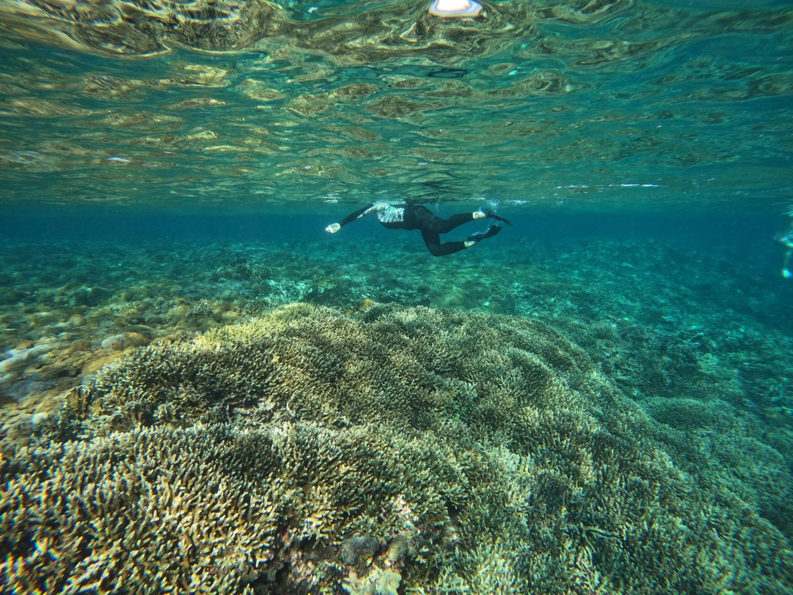
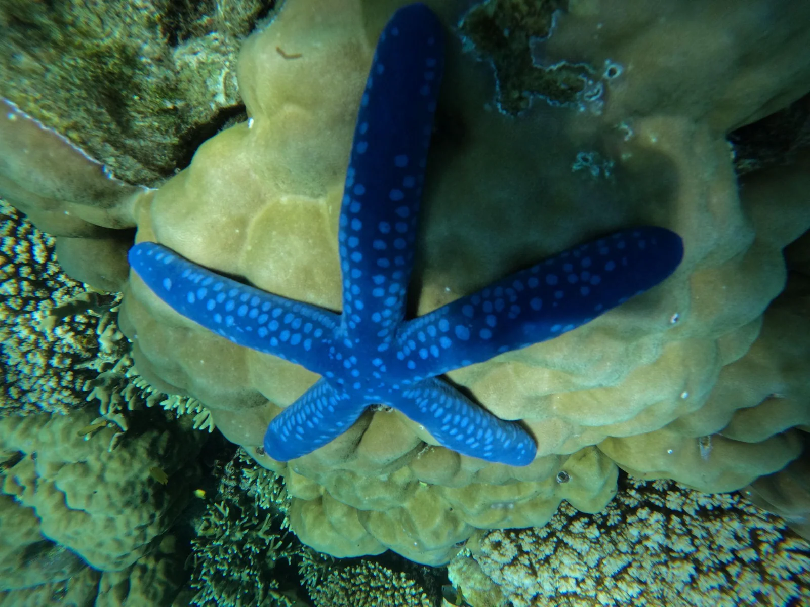
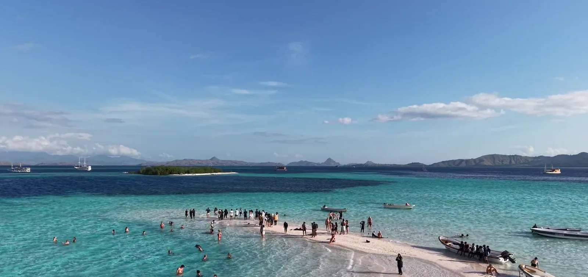
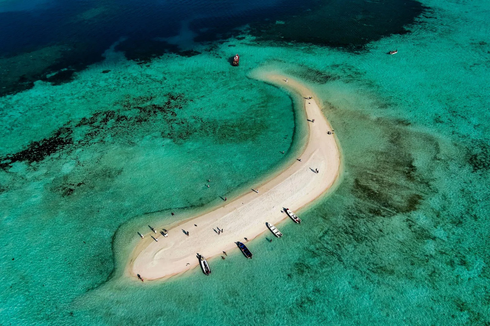

In this guide
Unlike a typical island, Taka Makassar is a sandbank that changes with the tide. As a result, its shape and the amount of exposed sand can look different throughout the day. Here is how to plan your visit, what to do there, and what to know before adding this remarkable destination to your Komodo adventure with Kapalsantai.
Sea conditions, routes, and wildlife sightings can change. Check the latest information with your guide before your trip.
What Makes Taka Makassar Komodo Special?
A Crescent-Shaped Sandbank in the Middle of the Sea
One of the first things you will notice is the sandbank's distinctive curved shape. Surrounded by shades of blue and turquoise, this narrow stretch of sand creates a striking contrast with the open sea.
However, Taka Makassar is not a permanent island with a beach that stays fully exposed all day. At low tide, more of the sandbank becomes visible. When the tide rises, parts of it may disappear beneath the water.
Because of this, every visit can look a little different. The scenery also makes it a favorite stop for travelers who enjoy landscape photography and wide ocean views.
A Gateway to Komodo's Marine Beauty
The waters around Taka Makassar form part of the wider marine environment of Komodo National Park. Depending on the location and conditions, visitors may see coral formations, reef fish, or other marine life in the surrounding waters.
In addition, the destination is often combined with a visit to Manta Point. This gives travelers an opportunity to experience two different sides of Komodo's underwater landscape in one sailing itinerary.
Marine life sightings are never guaranteed, though. Therefore, enjoy the natural surroundings without expecting a particular animal to appear.


What Can You Do at Taka Makassar?
Walk Along the Sandbank
When enough sand is exposed, you can step ashore and enjoy a walk along the curved shoreline. The open sea creates a beautiful backdrop, while the shallow water offers plenty of opportunities for scenic photographs.
Nevertheless, the amount of exposed sand depends on the tide. Ask your boat crew about the expected conditions before planning your visit around a beach walk.
Swim and Enjoy the Turquoise Water
The shallow water around the sandbank can be inviting for a refreshing swim. However, conditions are not always calm, and water depth can change with the tide.
For this reason, follow your guide's instructions before entering the water. Use an appropriate flotation aid if recommended, and never assume that shallow-looking water is automatically safe.
Go Snorkeling
Snorkeling is another way to explore the marine environment around the destination. With a mask, snorkel, and fins, you may be able to observe reef fish and underwater features when visibility and conditions allow.
However, the surrounding water is part of an open marine environment, where currents may be present. Always check with your guide before snorkeling, and avoid standing on or touching coral.
Capture Beautiful Ocean Views
Taka Makassar is a wonderful setting for travel photography. From the boat or the exposed sandbank, you can capture the contrast between pale sand, turquoise shallows, and deeper blue water.
If you use a drone, check current national park rules and obtain any required permission before flying. In addition, respect other visitors and wildlife rather than disturbing the surroundings for a photograph.
For another memorable marine encounter, you can also read our Manta Point guide.


When Is the Best Time to Visit?
The best time to visit depends on the experience you want. If your priority is walking along the exposed sandbank, tide timing is especially important.
More sand may be visible.
The sandbank can become smaller or partly submerged.
Ask your boat operator about the expected tide and schedule before your trip.
The dry season, generally around April to October, is also a popular period for exploring Labuan Bajo by boat. Even so, weather, visibility, waves, and currents can vary from day to day.
Rather than relying on a fixed month or time, choose an itinerary based on current conditions and your operator's guidance. Most importantly, remember that safety should take priority over reaching a particular viewpoint.
What Should You Bring?
A little preparation can make your visit more comfortable. Consider packing:
- Swimwear and a rash guard for swimming and sun protection.
- A hat and sunscreen for protection from the tropical sun.
- A mask, snorkel, and fins, if these are not provided by your boat.
- A life jacket or flotation aid when recommended by your guide.
- A waterproof bag to protect your phone and personal belongings.
- A reusable water bottle to stay hydrated.
- A camera or waterproof phone case for capturing the scenery.
Also, bring any personal medication you may need. If you are prone to seasickness, consider suitable medication and follow its instructions.

Frequently Asked Questions
Is Taka Makassar an island?
No. Taka Makassar is a sandbank rather than a typical permanent island. Its exposed area changes with the tide, so it may look larger or smaller depending on when you arrive.
Can I visit Taka Makassar on a day trip?
Yes, some boat itineraries include it as part of a day trip from Labuan Bajo. However, the route and available stops depend on the operator, weather, and sea conditions. Longer liveaboard trips may also include the destination.
Can I snorkel at Taka Makassar?
Snorkeling may be possible when conditions are suitable. However, currents and visibility can change, so always follow your guide's assessment before entering the water.
Is there a best time of day to visit?
There is no single time that guarantees the best experience. If you want to see more of the sandbank exposed, ask your operator about the tide. In addition, check the forecast and sea conditions before departure.
Can I combine Taka Makassar and Manta Point?
Yes. Many Komodo itineraries combine these destinations, allowing you to enjoy the sandbank and explore another well-known marine site on the same trip. The exact route depends on your selected itinerary and the day's conditions.
Make Taka Makassar Part of Your Komodo Adventure
From its curved shoreline to the turquoise waters surrounding it, Taka Makassar Komodo offers a memorable stop on a sailing journey through Indonesia's remarkable marine landscapes.
With the right itinerary, you can combine time on the sandbank with snorkeling, island views, and other destinations around Komodo National Park. However, the best experience comes from planning around the tides, respecting the marine environment, and following local guidance.
Make room for Taka Makassar.
Explore boat trips around Komodo National Park and find an itinerary for your next island adventure.
Explore boat trips